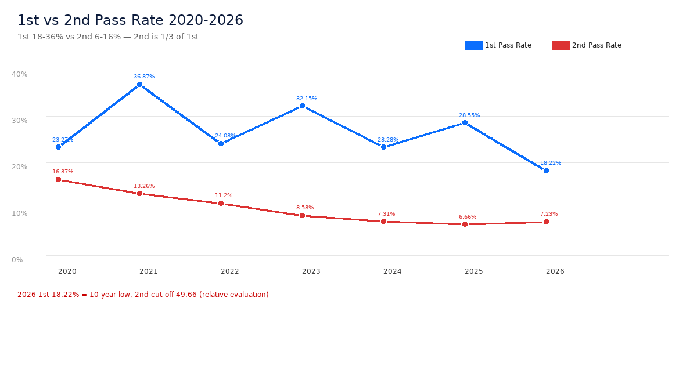
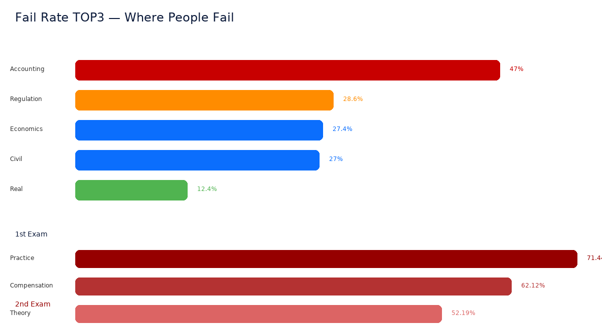
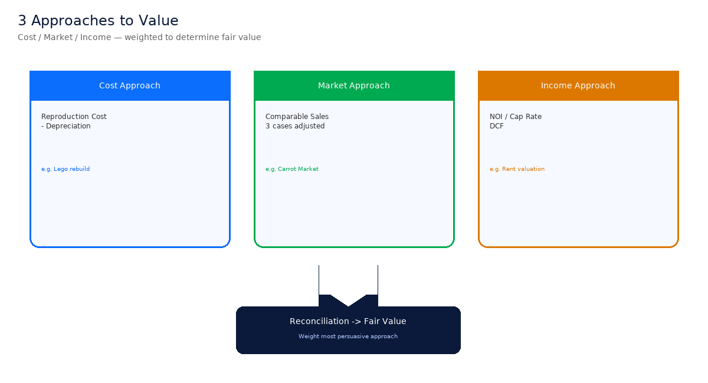
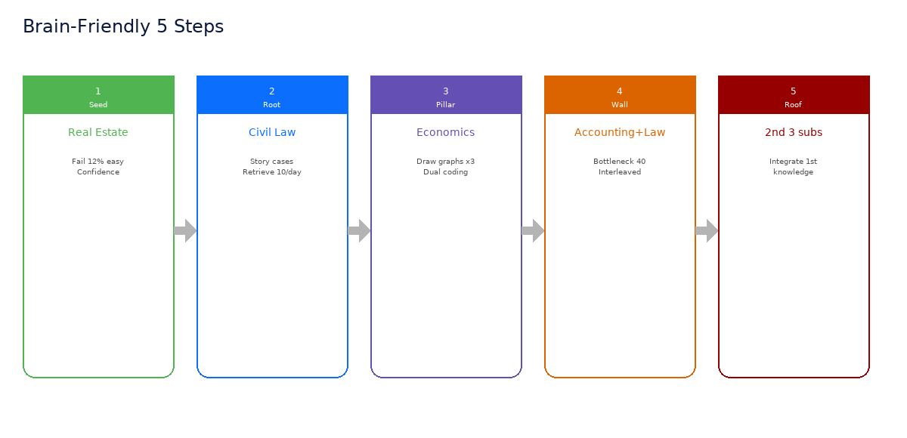
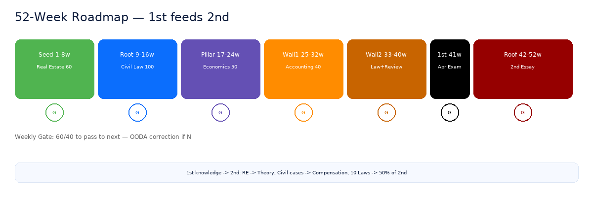

1차(객관식)는 입장권 검사 — 5개 중 1개 고르기. 2차(논술)는 직접 운전 — 왜 이 가격인지 써야 함. 동차는 같은 해 4월→7월→9월에 한 번에 끝내는 마라톤(최종 3%).
| 교시 | 과목 | 12살 한줄 |
|---|---|---|
| 1교시 120분 | 민법(총칙·물권) 경제학원론 부동산학원론 | 약속·소유 규칙 수요·공급·물가 땅값은 어떻게? |
| 2교시 80분 | 관계법규(10법) 회계학 | 나라 규칙 모음 장부·계산 |
| 교시 | 과목 | 무엇을 쓰나 |
|---|---|---|
| 1교시 | 감정평가실무 | 집·땅·공장 값 계산 |
| 2교시 | 감정평가이론 | 왜 이 방법으로? |
| 3교시 | 보상법규 | 땅 뺏을 때 보상액 |

출처 Q-Net·법률저널 교차검증. 2026년 1차 18.22%는 10년 최저.

| 연도 | 1차 합격률 | 2차 합격률 | 최종(1×2) |
|---|---|---|---|
| 2023 | 32.15% (1,773/5,515) | 8.58% (204/2,377) | 3.7% |
| 2024 | 23.28% (1,340/5,755) | 7.31% (195/2,667) | 3.39% |
| 2025 | 28.55% (1,914/6,702) | 6.66% (190/2,851) | 2.8% |
| 2026 | 18.22% (1,169/6,416) | 7.23% (189/2,614) | 2.95% 역대 최저 |

| 구분 | 점유 | 소유 |
|---|---|---|
| 뜻 | 쥐고 있음 | 법적 주인 |
| 예 | 도둑도 점유는 한다 | 등기부상 주인 |
| 시험 | 점유보호 vs 소유권 방해배제 — OX 단골 | |
| 공시력 | 공신력 |
|---|---|
| 누가 주인인지 보여줌 O | 믿고 사면 보호 X |
| “믿고 샀어도 진짜 주인이 이긴다” — 민법 빈출 | |
| 판례 | 무슨 일 | 법원 한줄 | 시험 OX |
|---|---|---|---|
| 2014도191 회계사 감정 | 삼정KPMG가 땅 3조→7조 평가, 1.5억 수령 | 회계사는 토지 감정 못 한다 → 유죄 | “공인회계사는 감정 가능?” → X |
| 2017도10634 법원 촉탁 | 산양삼 보상을 법원이 비자격자에게 맡김 | 법원이 시키면 괜찮다 → 정당행위 | “법원 촉탁이면 비자격자도 가능?” → O |
| 2025두35499 사후 감정 합법 | 증여 후 국세청이 뒤늦게 감정해 74억→115억 | 시행사 60조 사후 감정 합법 | “신고 후 감정 위법?” → X |
| 2024두54348 꼬마빌딩 | 서대문구 토지 상속, 공시 74억→감정 115억 | 가격변동 없음 입증책임=과세관청 | “입증책임은 납세자?” → X |
| 구분 | 감정평가법 | 세법(상증세법 60조) |
|---|---|---|
| 목적 | 누가·어떻게 감정하나 (자격·의무) | 얼마로 세금 매기나 (시가주의) |
| 핵심 판례 | 2014도191(자격) | 2025두35499(사후 감정 합법) |
| 시험 | 1차 관계법규 | 2차 보상법규 + 실무 연결 |

전체 60개는 01_용어집_12살.md에 있습니다. 여기선 **가장 헷갈리는 6쌍**만 카드로.

| 시간 | 무엇을 | 뇌과학 |
|---|---|---|
| 0-10분 | 어제꺼 꺼내기 — 백지테스트 | 간격 반복 |
| 10-40분 | 새것 30% — 12살 설명 말하기 | 정교화 |
| 40-70분 | 계산 20% — 회계5+경제5 섞기 | 교차 |
| 70-90분 | 판례 20% — 표 그리기 | 이중코딩 |
| 90-100분 | 내일 꺼내기 예약 — 6/8 통과? | Gate |
1) 위 6개 이미지를 프린트해 벽에 붙이기(시각 기억)
2) 매일 아침 백지 1장에 “유치권 3요건 / 2014도191 한줄 / 감가공식 1개” 쓰기
3) REA 프롬프트 3개로 매주 자료집 자동 생성 → 06_자료집_제작_Blueprint.md 참조